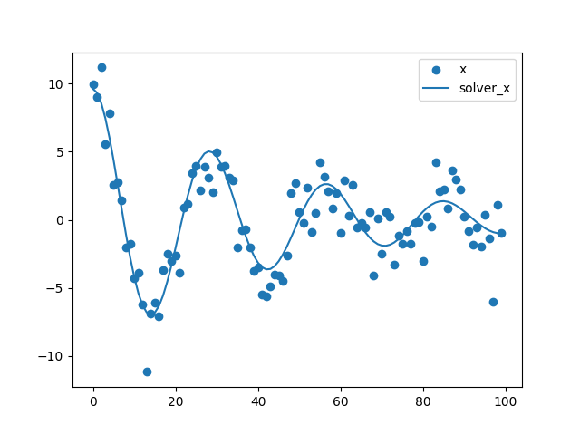

Welcome to deFit
Fitting Differential Equations to Time Series Data. ( deFit ).
1 Overview
1.1 What is deFit?
Use numerical optimization to fit ordinary differential equations (ODEs) to time series data to examine the dynamic relationships between variables or the characteristics of a dynamical system. It can now be used to estimate the parameters of ODEs up to second order.
1.2 First impression in Python
To get a first impression of how deFit works in simulation, consider the following example of a differential equational model. The figure below contains a graphical representation of the model that we want to fit.
import defit
import pandas as pd
df1 = pd.read_csv('defit/data/example1.csv')
model1 = '''
x =~ myX
time =~ myTime
x(2) ~ x + x(1)
'''
result1 = defit.defit(data=df1,model=model1)

- Fit ordinary differential equations (ODEs)
- Report R-squared, RMSE, equation and SE
- Plot: points are users' data, and the line is the equation.
- Support estimates the parameters of ODEs up to second order.
- deFit can run in Python and R environments.R, Python
2 Navigation
- user guide in R
- user guide in Python
- news
- issues
3 references
- https://scipy.github.io/devdocs/reference/generated/scipy.optimize.minimize.html
- http://sia.webpopix.org/nlme.html